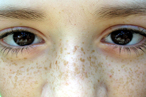
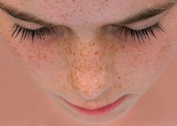

Face freckles


1. Lemon juice has lightening properties that are highly effective to treat freckles. Take fresh lemon juice and apply gently on the affected area for 10-15 minutes, then wash your face with lukewarm water. Repeat this remedy regularly.
2. Apply sour cream to the affected area of the skin and allow to dry for a few minutes. Do not rinse your face with water; just wipe it with a soft tissue or a towel then apply some moisturizer on your face. The lactic acids in sour cream can help to reduce freckles.
3. Honey has natural skin bleaching properties that work wonders for the skin. Take a teaspoon of honey and add a little bit of warm water to it. Apply this on the freckles, leave for 10-15 minutes and wash your face with warm water.
4. Papaya is another effective remedy that can be used to treat freckles. The enzyme present in papaya can help to lighten freckles. Dab a cotton ball in fresh papaya juice and apply it directly on the freckles. Leave for 10-15 minutes and rinse your face with cold water. Repeat this remedy on a daily basis to remove freckles and this will also keep your skin healthy and soft.
5. Tomatoes can prevent and treat freckles relatively. The vitamin C present in tomatoes works efficiently in reducing freckles. Daily drink a glass of tomato juice or you can have it regularly along with your meals.
6. Cucumber juice is a natural remedy to lighten freckles and dark spots on the skin. Extract the juice from cucumber and apply the juice on your skin twice a day.
7. Regular use of facemask made of fruits and vegetables such as apricots, strawberries, red currant and cucumber will keep your skin fresh and soft and is very helpful to lighten freckles.
8. Radish has natural bleaching agent that works wonders to remove freckles. Grate 1 radish and add the juice of 1 lime to it. Mix well and apply all over your face, allow it to dry and wash it with water. This remedy will help lighten the freckles naturally and will also help remove blackheads.